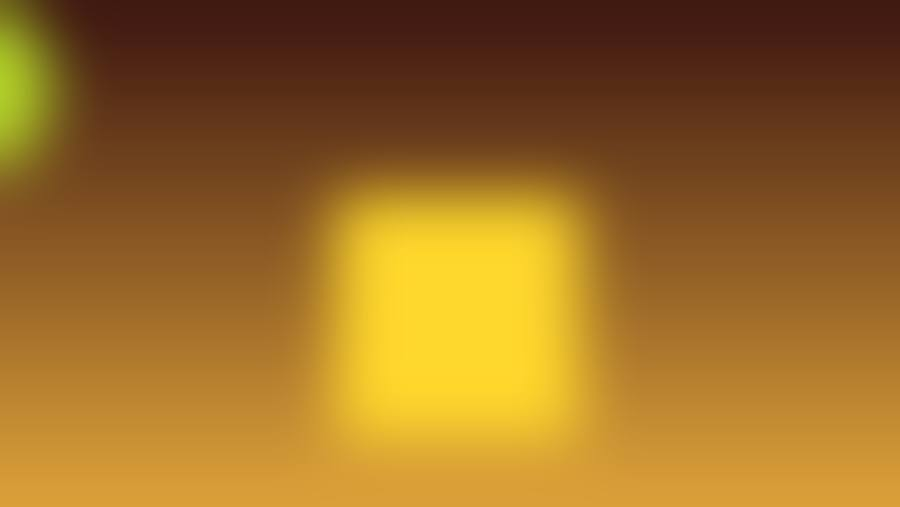
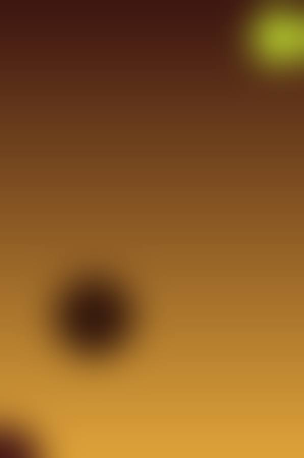

Meze, pide și kebap pe bulevard.
Restaurantul cu bucătărie turcească din Constanța.
Bd. Exemplului nr. 10, Constanța
Oferte
Create în panoul de administrare demo. Nu sunt oferte reale ale restaurantului.
În turcă, lale înseamnă lalea, un simbol vechi al Turciei.
Meniul începe cu meze reci și ciorbă, continuă cu pide și lahmacun din cuptor, apoi cu kebapuri, și se încheie cu baclava.
Povestea locului, a echipei și a bucătăriei se scrie aici, împreună cu proprietarul.
Din meniu, în imagini
Imagini ilustrative cu licență liberă, alese după preparatele din meniu. Nu sunt fotografii de la Lale.
-

Meze reciGrafică generată -
Adana kebapGrafică generată -

Baclava cu fisticGrafică generată
Localul
Pe Bulevardul Exemplului nr. 10.
Fotografia Lale urmează să fie trimisă de proprietar.
Fotografia Lale urmează să fie trimisă de proprietar.
Fotografia Lale urmează să fie trimisă de proprietar.
Rezervă o masă
Completează cererea. În demo, ea ajunge în panoul de administrare, unde restaurantul o poate confirma sau anula.
Demo: cererea se salvează doar în acest browser și nu ajunge la restaurant. Pentru o rezervare reală, sună la restaurant.
- Program
Va fi afișat după ce îl confirmă restaurantul.
- Telefon
- +40 700 000 901 Din listări publice, de confirmat
- Livrare și la pachet
- Opțiunile de comandă sunt de confirmat